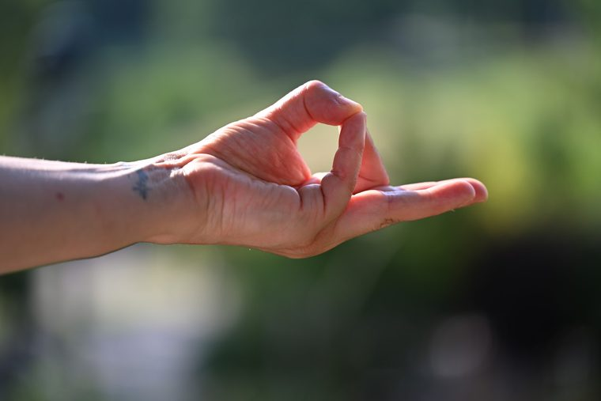
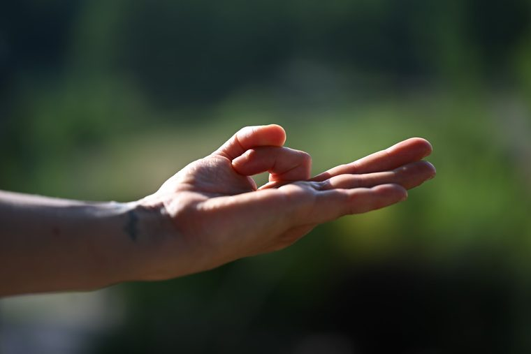
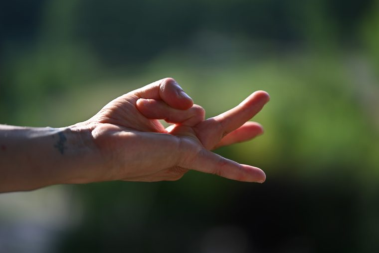
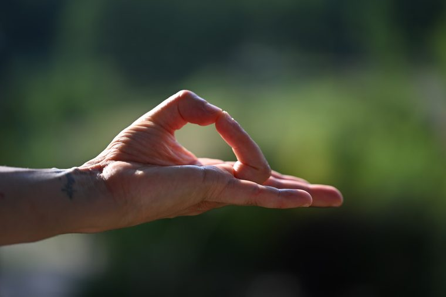
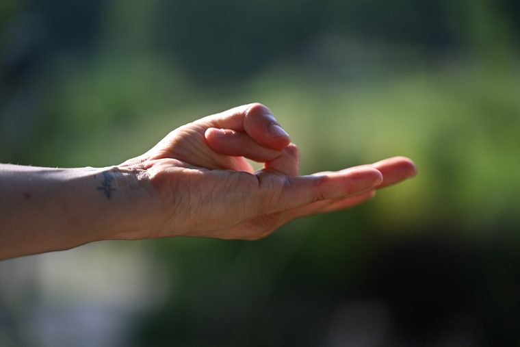
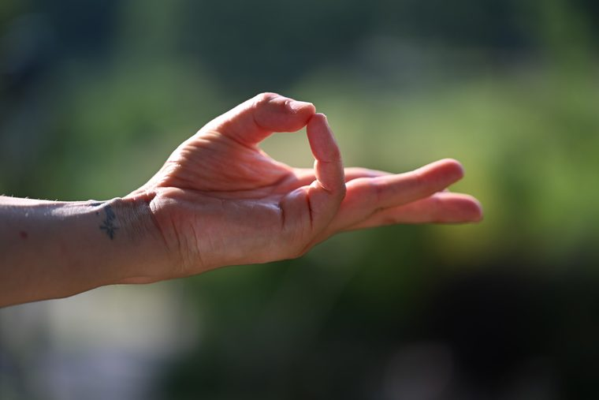

Et si c'était le moment de vous accorder la priorité ? Les rendez-vous pour vous reconnecter à vous-même.
Créa-ateliers de cuisine, Ateliers des 3 M, retraites et rendez-vous en partenariat : tout est ici, dans l'ordre. Les places sont limitées, l'inscription est nécessaire.
Réserver ma place Me poser une question
Les prochaines dates sont publiées au fil des saisons. Elles sont toujours à jour sur mon agenda de réservation en ligne — vous y réservez votre place en quelques clics, sans paiement.
Voir les dates et réserverUne cuisine qui nourrit le corps, les sens et la créativité, tout en harmonie avec la nature.
Envie de partager, de découvrir une façon plus créative de cuisiner, de manger avec plus de conscience et de raviver les papilles ? Lors des créa-ateliers des lundis, venez découvrir une cuisine proche de la Nature, locale et basée sur les principes de l'Ayurvéda.
Chaque atelier dure 3 heures — de 18h30 à 21h30 — soit trois heures de partage, de cuisine et de bonne humeur. Repas partagé inclus, ainsi que les astuces et les recettes. Limité à 8 personnes. (Prévoir un contenant pour les restes et un tablier.)
Chaque atelier aborde un thème spécifique pour mieux comprendre et nourrir son corps et son esprit, tout en savourant des recettes locales, fraîches et pleines de vie, selon les saisons, en harmonie avec Mère Nature.
Tarif créatif : 30 €
Le tarif inclut le PDF des recettes, les ingrédients et le repas. Un acompte de 15 € est demandé à l'inscription.
Les prochaines dates sont publiées au fil des saisons. Elles sont toujours à jour sur mon agenda de réservation en ligne — vous y réservez votre place en quelques clics, sans paiement.
Voir les dates et réserverEnvie d'un avant-goût ? Les recettes que je partage au fil des saisons sont sur le blog — à lire, à tester chez vous, ou simplement pour vous donner envie de venir cuisiner avec nous.
Cliquez sur une vignette pour lancer la vidéo.
Une parenthèse pour se connecter à soi — Moudras, Mantras, Méditation.






Quelques moudras parmi ceux que nous pratiquons pendant l'atelier.
Aucune expérience n'est nécessaire : l'atelier est ouvert à toutes et à tous.
De 19h00 à 20h30 · 15 €, suivi d'un encas issu de l'Ayurvéda
Seulement sur inscription — 12 places disponibles. À Nelling.
Les prochaines dates sont publiées au fil des saisons. Elles sont toujours à jour sur mon agenda de réservation en ligne — vous y réservez votre place en quelques clics, sans paiement.
Voir les dates et réserverOffrez-vous une escapade dédiée à la découverte de votre essence profonde et à l'éveil de votre potentiel.
Trois jours dans un gîte 3 étoiles au cœur des Vosges, à Vagney (proche de La Bresse), animés à quatre mains par Monia Di Cintio (Un Brin d'Ayurvéda) et Chloé Masson (Les saisons de Chloé), qui prépare les repas.
Tarifs : 380 € par personne en chambre partagée · 400 € par personne en chambre seule
Limité à 6 personnes, ouvert à tous, débutants acceptés. Le tarif comprend l'hébergement, les petits-déjeuners et les repas, les cours, les ateliers, les supports écrits, les outils pour le Yoga et les tisanes à volonté. Le transport n'est pas compris. Acompte de 100 € à la réservation, possibilité de payer en 3 ou 4 fois. Sur inscription seulement.
Les prochaines dates sont publiées au fil des saisons. Elles sont toujours à jour sur mon agenda de réservation en ligne — vous y réservez votre place en quelques clics, sans paiement.
Voir les dates et réserverCertains rendez-vous sont organisés avec des structures du territoire. L'inscription se fait alors directement auprès d'elles.
« Être parents, ça s'apprend… et ça fait du bien ! » Des séances parents-enfants gratuites, le dimanche de 9h30 à 11h, que j'anime.
Trois thématiques : comprendre et écouter les émotions · le stress parental et la régulation émotionnelle · renforcer le lien parent-enfant. Et deux approches adaptées : l'une pour les enfants neurotypiques (jusqu'à 10 ans), l'autre pour les enfants neuroatypiques (autisme, TDAH, troubles DYS — sans limite d'âge). On peut suivre le cycle complet ou venir à une séance seule, selon la thématique qui intéresse.
Renseignements & inscriptions : foyerdeslacs@gmail.com · 07 69 56 30 80
Pour les 3–10 ans, chaque mercredi au dojo du centre sportif : Éveil corporel (3–6 ans) de 16h00 à 16h45, puis Dynayoga (6 ans et plus) de 17h00 à 17h45.
Renseignements & inscriptions : foyerdeslacs@gmail.com · 07 69 56 30 80
Les prochaines dates sont publiées au fil des saisons. Elles sont toujours à jour sur mon agenda de réservation en ligne — vous y réservez votre place en quelques clics, sans paiement.
Voir les dates et réserverRéservez votre place en ligne, ou écrivez-moi si vous hésitez : je vous réponds personnellement.
Demander un rendez-vous